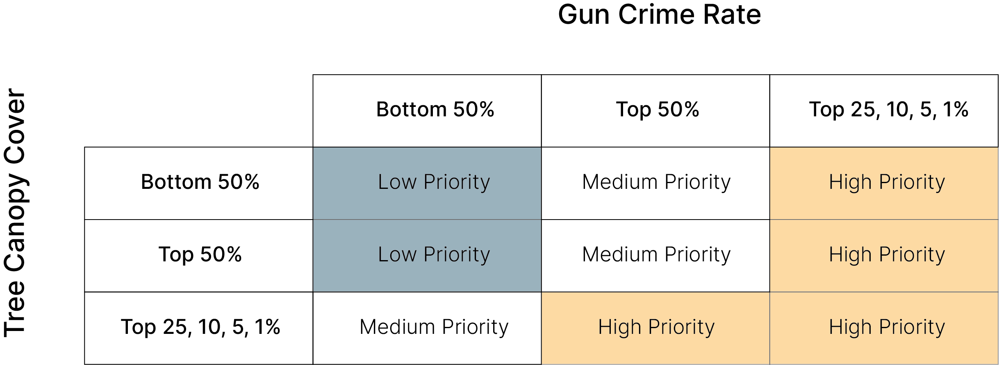
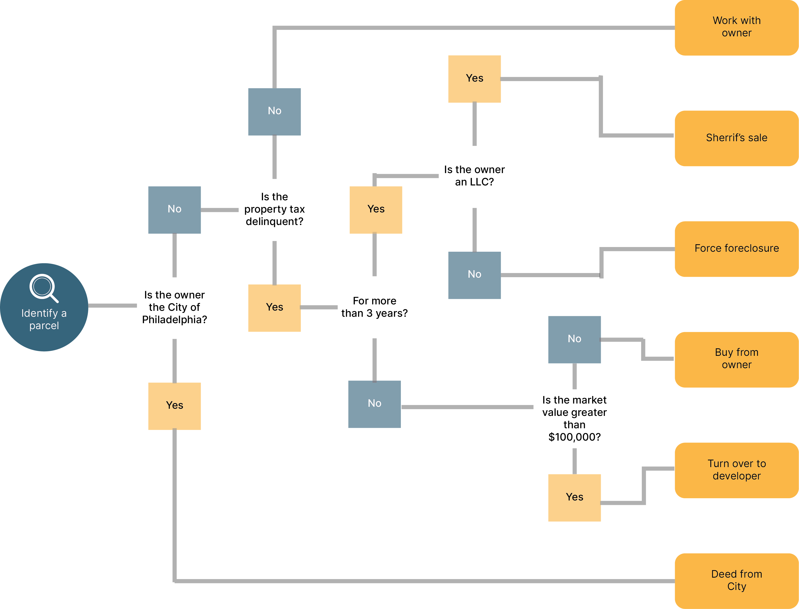

How We Built It
Background
Philadelphia has a gun violence problem.
Philadelphia has roughly 40,000 vacant parcels.
Research shows that cleaning and greening abandoned lots and buildings reduces gun crime by as much as 29%.
Identifying the highest-priority vacant properties will allow community groups to invest their limited resources where they will have the biggest impact.
Every property in Philadelphia can be classified as high, medium, or low priority based on the rate of nearby gun crime and the relative level of tree canopy cover.
Using a decision tree, it’s possible to identify the ideal acquisition process for every abandoned property in Philadelphia.
We can focus on high-priority properties that are relatively easy to acquire.
Based on those conversations, I developed a Python script that classified every vacant property in the City based on priority level and acquisiton process. Priority level was estimated based on the surrounding rate of gun crime and the relative lack of tree canopy cover. One major challenge in this presentation was explaining the concept of a Python script to a non-coder audience; it required me to think creatively about how to represent code in a more intuitive graphic form.

I used a decision tree to suggest the most relevant legal process necessary to intervene in every single property in Philadelphia. Because it deals with sophisticated legal processes, this decision tree is far from final. However, it is a good starting point, and I am in the process of getting further input from organizations and agencies like the Garden Justice Legal Initiative and the Philadelphia Land Bank.
